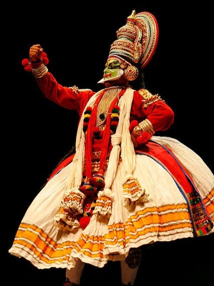

‘Kathakali’, an important genre in the Indian classical dance form, is associated with storytelling form of this art. It is the dance drama from the south Indian state of Kerala. Similar to other Indian classical dance arts, the story in ‘Kathakali’ is also communicated to audience through excellent footwork and impressive gestures of face and hands complimented with music and vocal performance. However it can be distinguished from the others through the intricate and vivid make-up, unique face masks and costumes worn by dancers as also from their style and movements that reflect the age-old martial arts and athletic conventions prevalent in Kerala and surrounding regions. Traditionally performed by male dancers, it developed in courts and theatres of Hindu regions contrary to other Indian classical dances which predominantly developed in Hindu temples and monastic schools. Although not clearly traceable, this classical dance form is considered to have originated from temple and folk arts that trace back to 1st millennium CE or before.
Author Phillip Zarrilli mentions that the basic components and distinct features of this form of classical dance can be traced back to ancient Sanskrit Hindu text called ‘Natya Shastra’, a text on the performing arts written by the sage Bharata Muni, an Indian theatrologist and musicologist. Although the full version of the text is conjectured to be completed between 200 BCE to 200 CE, such time span also hover around 500 BCE to 500 CE. Various chapters of this text consist of thousands of verses. Dance is categorised in two specific forms in ‘Natya Shastra’ - ‘nrita’ and nritya’. While the former is pure dance that concentrates on hand movements and gestures, the latter is solo expressive dance that showcases brilliance of expressions. Natalia Lidova, a Russian scholar mentions that the text throws light upon different theories of Indian classical dances that includes theories of Tandava dance, standing postures, basic steps, bhava, rasa, methods of acting and gestures. Traditionally the name of this dance form was deduced by joining two words, ‘Katha’ and ‘Kali’ where ‘Katha’ in Sanskrit means a traditional tale or story and ‘Kali’ derived from ‘Kala’ refers to art and performance.
Views and opinions regarding the roots of ‘Kathakali’ vary due to its somewhat ambiguous background. While Jones and Ryan mention that this genre of performing art dates back to over 500 years, according to Mahinder Singh its roots are way more ancient dating back to around 1500 years. Zarrilli states that the 16th and 17th centuries witnessed development of Kathakali as a unique form of classical dance in the coastal belt of southern India which have Malayalam speaking populace.
COSTUMES
‘Kathakali’ incorporates the most intricate make-up code, costume, face masks, head dress and brightly painted faces among all Indian classical dance forms. Its unique costume, accessories and make-up complimented with spectacular performance, music and lightings bringing life to the characters of the great epics and legends attracts and flabbergasts both young and the old thus creating a surreal world around. The make-up code followed in ‘Kathakali’ conventionally typifies the characters of the acts categorising them as gods, goddesses, saints, animals, demons, and demonesses among others. This classification of characters according to Zarrilli reflects the three Gunas namely sattva (goodness, virtuous, harmonious, constructive), rajas (passion, egoistic, dynamic, action, aimless), and tamas (darkness, viciousness, chaotic, destructive) of the ‘Gu?a’ theory of personalities that originated in the age-old ‘Samkhya’ school of Hindu philosophy.
‘Kathakali’ encompass seven fundamental make-up codes which are ‘Pacca’ (green), ‘Minukku’, ‘Teppu’, ‘Kari’ (black), ‘Tati’, ‘Payuppu’ (ripe) and ‘Katti’ (knife). A character with ‘Pacca’ make-up and brightly coral red coloured lips depicts gods, sages and noble characters like Shiva, Krishna, Rama and Arjuna. A ‘Minukku’ make-up using orange, saffron or yellow colour depicts virtuous and good female characters like Sita and Panchali. The colour code for women and monks is yellow. A divine or virtuous character is represented with a Vella Thadi make-up having a white beard. Special characters like Jatayu and Garuda are adorned with a ‘Teppu’ make-up, while ‘Kari’ (black) is the code for characters like hunters and forest inhabitants. Black is also used for representing demonesses and unreliable characters with distinctive red patches. Evil characters like Ravana bear the ‘Tati’ (red) make-up. Head gears and face masks help emphasize the face make-up which is prepared from colours extracted from vegetables and rice paste. It takes several hours to complete the entire get up of all the actor-dancers of a play thus bringing out the personality of each character
INSTRUMENTS AND MUSIC
A ‘Kathakali’ performance includes various instruments that encompass three major drums namely ‘Itaykka’, ‘Centa’ and ‘Maddalam’. Music plays a significant role in this form of classical art creating variations of tones setting and corresponding to the mood of a particular scene. Clifford and Betty elucidate some of the important musical arrangements typifying and going in line with the mood of the scene. These include ‘Cempata’ that is used in different sequences like during combat between good and evil and while concluding a scene; ‘Atanta’ during scenes consisting of divine and virtuous characters; ‘Muri Atanta’ during heroic, comic and light-hearted acts; ‘Triputa’ in scenes involving teachers and sages; ‘Pancari’ during repugnant scenes; and ‘Campa’ during scenes portraying clash, argument, tension and discord between lovers.
The voice artists also contribute significantly in the entire act with not only delivering the relevant lines but also setting the mood and context of the scene by modulating their voice to express the temperament of the character. In case of expressing anger the artist would deliver the lines in clear and sharp high tone while in case of a plea the artist applies a more delicate and exhausted tone.